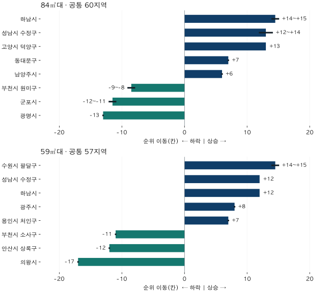

수도권 가격 지도
2015·2026 아파트 지역 가격 순위, 신축 거래와 함께 비교하기
2015년과 2026년 상반기 서울·수집 경기의 84㎡대·59㎡대 가격 순위 변화를 비교합니다. 지역별 중앙값·가격 범위, 신축 거래 비중 변화와 같은 단지 비교를 확인하세요.
분석 기간 · 2015·2026년 상반기 · 서울·수집 경기 | 자료 기준일 · 2026-10-04
2015년과 2026년의 같은 상반기를 비교하면, 84㎡대 아파트의 지역 가격 순위는 하남·성남 수정·고양 덕양에서 크게 올랐습니다. 하지만 양쪽 시기에 거래된 같은 단지·면적만 남기고 집계 방식을 바꾸면 상승 폭이 작아집니다. 순위가 오른 지역에서 어떤 집이 거래됐는지까지 봐야 합니다.
- 84㎡대는 공통 60지역, 59㎡대는 공통 57지역 안에서 비교합니다. 2026년 전체나 전국 순위가 아닙니다.
- 84㎡대 하남은 14~15칸, 수정구는 12~14칸, 덕양구는 13칸 올랐습니다. 가격 상승률 순위와는 다릅니다.
- 신축 거래 비중이 줄면서 순위가 오른 지역도 있습니다. 순위 이동만으로 신축 공급의 효과를 단정할 수 없습니다.
2015년과 2026년, 같은 상반기와 면적을 맞췄습니다
두 기간은 각각 1~6월입니다. 11년 간격의 관측 거래를 비교하며 중간 연도의 경로는 이 표에 담지 않았습니다. 면적도 따로 봅니다. 84㎡대는 전용 84㎡ 이상 85㎡ 미만, 59㎡대는 59㎡ 이상 60㎡ 미만입니다. 흔히 부르는 공급평형과 다르므로 전용면적과 평형의 차이부터 확인해도 좋습니다.
지역은 현재 기준 서울 25구와 수집 경기 36개 시·구입니다. 인천과 수집하지 않은 경기 지역은 빠져 있습니다. 두 시점 모두 적격 거래 40건·10단지 이상인 지역만 같은 순위표에 넣었습니다. 그래서 84㎡대는 60지역, 59㎡대는 57지역이 비교 대상입니다. 행정구역도 현재 기준으로 과거 거래를 다시 묶었습니다.
순위의 기준은 거래금액 중앙값입니다. 비싼 쪽이 1위이고, 같은 가격은 공동 순위 구간으로 남깁니다. 예컨대 순위 이동 +14~15는 동률 때문에 한 숫자로 정할 수 없다는 뜻입니다. 추정 오차나 미래 예측 범위가 아닙니다.
84㎡대는 하남·수정·덕양, 59㎡대는 팔달의 상승 폭이 컸습니다
각 면적에서 순위 상승 폭이 큰 다섯 지역과 하락 폭이 큰 세 지역을 뽑았습니다. 동률 구간이 있는 지역은 구간의 가운데를 기준으로 정렬했으므로 상위 지역 사이의 미세한 서열에는 의미를 두지 않습니다. 아래 전체 표에서는 빠진 지역도 확인할 수 있습니다.

| 지역 | 2015 → 2026 순위 | 순위 이동(칸) | 신축 거래 비중 변화 |
|---|---|---|---|
| 경기 하남시 | 29~30 → 15 | +14~+15 | +5 이상 +10 미만 |
| 경기 성남시 수정구 | 33~35 → 21 | +12~+14 | +0 이상 +5 미만 |
| 경기 고양시 덕양구 | 48 → 35 | +13 | -5 이상 +0 미만 |
| 서울 동대문구 | 24 → 17 | +7 | -10 이상 -5 미만 |
| 경기 남양주시 | 52 → 46 | +6 | -10 이상 -5 미만 |
| 경기 부천시 원미구 | 29~30 → 38 | -9~-8 | +0 이상 +5 미만 |
| 경기 군포시 | 36 → 47~48 | -12~-11 | -10 이상 -5 미만 |
| 경기 광명시 | 14 → 27 | -13 | -25 이상 -20 미만 |
84㎡대에서 광명은 13칸 내려갔습니다. 이것은 가격이 13% 하락했다는 뜻이 아닙니다. 다른 지역과 비교한 위치가 내려갔다는 뜻입니다. 가격 자체의 변화는 아래 두 시점의 중앙값을 함께 읽어야 합니다.
| 지역 | 2015 → 2026 순위 | 순위 이동(칸) | 신축 거래 비중 변화 |
|---|---|---|---|
| 경기 수원시 팔달구 | 42 → 27~28 | +14~+15 | +55 이상 +60 미만 |
| 경기 성남시 수정구 | 24 → 12 | +12 | +25 이상 +30 미만 |
| 경기 하남시 | 30 → 18 | +12 | +10 이상 +15 미만 |
| 경기 광주시 | 51 → 43 | +8 | +10 이상 +15 미만 |
| 경기 용인시 처인구 | 56 → 49 | +7 | +20 이상 +25 미만 |
| 경기 부천시 소사구 | 26 → 37 | -11 | +5 이상 +10 미만 |
| 경기 안산시 상록구 | 35 → 47 | -12 | +0 이상 +5 미만 |
| 경기 의왕시 | 13 → 30 | -17 | -20 이상 -15 미만 |
59㎡대에서는 수원 팔달이 14~15칸 올랐고 의왕은 17칸 내려갔습니다. 면적별 비교 지역도 다르므로 59㎡대의 한 칸과 84㎡대의 한 칸을 같은 가격 차이로 바꾸어 해석할 수 없습니다.
신축 거래가 늘어서 순위가 올랐을까요?
여기서 신축 거래는 계약연도에서 준공연도를 뺀 값이 0~5년인 거래입니다. 실제 입주 물량이나 공급 증가율이 아닙니다. 준공연도를 알 수 없거나 계약연도보다 늦은 거래는 연식 비중의 분모에서 제외했습니다. 연식을 확인할 수 있는 거래 비중은 모든 비교 집계에서 98%를 넘었습니다.
표의 신축 거래 비중 변화는 5%p 폭의 구간입니다. “+5 이상 +10 미만”은 신축 거래의 몫이 5%p 이상, 10%p 미만 늘었다는 뜻입니다. 개별 시점의 비중이나 신축 거래 건수는 이 표에서 제공하지 않습니다.
84㎡대 덕양·동대문·남양주는 신축 거래 비중이 줄었는데도 순위가 올랐습니다. 반면 59㎡대 팔달의 비중 변화는 +55%p 이상 +60%p 미만입니다. 동반 변화는 지역과 면적에 따라 달랐습니다. 순위와 신축 비중 사이에 하나의 원인 관계를 붙이기 어렵습니다.
양쪽 시기에 거래된 같은 단지·면적만 남기면
구성 차이를 한 번 더 보려고, 같은 단지 안의 정확한 전용면적이 양쪽 기간에 각각 3건 이상 거래된 묶음만 남겼습니다. 묶음별 중앙값을 단지 안에서 똑같이 평균하고, 각 단지도 똑같은 비중으로 지역 평균을 냈습니다. 이 비교가 가능한 지역은 84㎡대 56곳, 59㎡대 49곳입니다.
84㎡대의 같은 56지역 안에서 원래 거래 중앙값 순위 이동은 하남 +14~15칸, 수정 +12~14칸, 덕양 +12칸입니다. 고정한 단지·면적의 균등평균 순위 이동은 각각 +2칸, +1칸, +1칸으로 작아집니다. 광명도 같은 비교에서 −13칸과 0칸으로 다릅니다.
이 차이는 거래된 집의 구성과 집계 방식을 확인해야 한다는 신호입니다. 단지·면적뿐 아니라 중앙값에서 평균으로 통계와 가중치도 바뀌었습니다. 따라서 두 순위의 차이를 그대로 “신축이 만든 효과”라고 계산하면 안 됩니다. 같은 층·상태의 집을 반복 매매한 가격지수도 아닙니다.
거래가 가장 많았던 단지를 빼도 같을까요?
각 지역·기간에서 거래 건수가 가장 많았던 단지 하나를 제외한 중앙값도 계산했습니다. 다른 지역의 원래 가격은 고정한 채 해당 지역의 위치만 다시 매겼습니다. 따라서 모든 지역에서 동시에 단지를 뺀 새 순위표가 아닙니다. 제외 뒤 표본 기준을 못 채우면 값을 비워 두었습니다. 상세 표에는 이 비교와 고정 단지 비교를 함께 남겼습니다.
지역별 가격 수준과 순위를 함께 확인하세요
가격은 억 원 단위로 0.1억 원까지 반올림했습니다. 괄호는 거래가격의 25~75분위 구간, 즉 가운데 절반의 가격 범위입니다. 중앙값의 신뢰구간이 아닙니다. 순위는 반올림 전 금액으로 계산했으므로 표시 가격이 같아 보여도 순위는 다를 수 있습니다.
84㎡대 전체 61지역 가격·순위
| 지역 | 2015H1 가격 | 2026H1 가격 | 순위 시작 → 끝 | 이동(칸) | 신축 비중 변화 | 양 기간 기준 |
|---|---|---|---|---|---|---|
| 서울 종로구 | 5.2 (4.8~5.7) | 12.2 (10.8~15.5) | 9 → 13 | -4 | -5 이상 +0 미만 | 충족 |
| 서울 중구 | 5.4 (5.2~5.7) | 16.1 (11.9~17.3) | 7 → 8 | -1 | -25 이상 -20 미만 | 충족 |
| 서울 용산구 | 6.3 (5.3~7.5) | 19.6 (17.5~25.3) | 3 → 4 | -1 | -15 이상 -10 미만 | 충족 |
| 서울 성동구 | 5.1 (4.5~5.8) | 18.0 (15.0~21.7) | 10 → 6 | +4 | -15 이상 -10 미만 | 충족 |
| 서울 광진구 | 5.8 (5.1~6.3) | 18.6 (15.1~21.0) | 5 → 5 | 0 | +5 이상 +10 미만 | 충족 |
| 서울 동대문구 | 3.9 (3.6~4.4) | 10.7 (8.8~14.0) | 24 → 17 | +7 | -10 이상 -5 미만 | 충족 |
| 서울 중랑구 | 3.4 (3.1~3.8) | 7.5 (6.7~8.5) | 31~32 → 32~33 | -2~0 | -5 이상 +0 미만 | 충족 |
| 서울 성북구 | 4.1 (3.6~4.5) | 9.8 (8.5~11.5) | 16~17 → 20 | -4~-3 | -10 이상 -5 미만 | 충족 |
| 서울 강북구 | 3.6 (3.3~4.2) | 7.5 (6.8~9.0) | 28 → 32~33 | -5~-4 | -25 이상 -20 미만 | 충족 |
| 서울 도봉구 | 3.1 (2.8~3.8) | 6.3 (5.5~8.3) | 42 → 40 | +2 | -5 이상 +0 미만 | 충족 |
| 서울 노원구 | 3.8 (3.3~4.2) | 8.5 (6.9~9.8) | 26 → 26 | 0 | +0 이상 +5 미만 | 충족 |
| 서울 은평구 | 3.9 (3.2~4.6) | 9.3 (7.8~11.7) | 23 → 23 | 0 | -20 이상 -15 미만 | 충족 |
| 서울 서대문구 | 4.0 (3.5~4.7) | 11.0 (8.8~14.4) | 21 → 16 | +5 | -15 이상 -10 미만 | 충족 |
| 서울 마포구 | 5.3 (4.7~6.0) | 15.3 (11.7~20.6) | 8 → 9 | -1 | -15 이상 -10 미만 | 충족 |
| 서울 양천구 | 4.1 (3.4~5.1) | 11.9 (8.0~14.4) | 16~17 → 14 | +2~+3 | -10 이상 -5 미만 | 충족 |
| 서울 강서구 | 4.0 (3.6~4.6) | 10.4 (8.6~12.8) | 19 → 18 | +1 | -5 이상 +0 미만 | 충족 |
| 서울 구로구 | 3.8 (3.3~4.3) | 7.9 (6.8~9.3) | 25 → 29 | -4 | -10 이상 -5 미만 | 충족 |
| 서울 금천구 | 3.3 (3.0~3.5) | 7.2 (5.7~9.7) | 37 → 36 | +1 | -15 이상 -10 미만 | 충족 |
| 서울 영등포구 | 4.3 (3.9~4.8) | 12.9 (9.8~15.7) | 13 → 12 | +1 | +0 이상 +5 미만 | 충족 |
| 서울 동작구 | 5.1 (4.5~5.8) | 15.2 (13.2~17.8) | 11 → 10 | +1 | -15 이상 -10 미만 | 충족 |
| 서울 관악구 | 4.1 (3.8~4.6) | 10.4 (7.5~12.0) | 15 → 19 | -4 | -5 이상 +0 미만 | 충족 |
| 서울 서초구 | 8.1 (6.5~9.1) | 31.0 (21.4~45.9) | 2 → 2 | 0 | +0 이상 +5 미만 | 충족 |
| 서울 강남구 | 8.1 (7.1~10.2) | 31.5 (24.3~36.0) | 1 → 1 | 0 | +0 이상 +5 미만 | 충족 |
| 서울 송파구 | 6.0 (5.2~8.7) | 23.8 (16.4~30.5) | 4 → 3 | +1 | -5 이상 +0 미만 | 충족 |
| 서울 강동구 | 4.6 (4.1~5.3) | 15.0 (11.8~18.6) | 12 → 11 | +1 | +0 이상 +5 미만 | 충족 |
| 경기 수원시 장안구 | 3.0 (2.7~3.4) | 6.0 (4.9~7.7) | 45 → 45 | 0 | +5 이상 +10 미만 | 충족 |
| 경기 수원시 권선구 | 2.6 (2.3~3.0) | 5.6 (4.3~6.4) | 51 → 47~48 | +3~+4 | -10 이상 -5 미만 | 충족 |
| 경기 수원시 팔달구 | 3.2 (2.8~3.4) | 7.0 (6.0~8.7) | 40 → 37 | +3 | +25 이상 +30 미만 | 충족 |
| 경기 수원시 영통구 | 3.4 (3.0~4.3) | 7.6 (5.7~9.5) | 31~32 → 30 | +1~+2 | -20 이상 -15 미만 | 충족 |
| 경기 성남시 수정구 | 3.4 (3.1~3.7) | 9.5 (7.8~14.2) | 33~35 → 21 | +12~+14 | +0 이상 +5 미만 | 충족 |
| 경기 성남시 중원구 | 4.0 (3.1~4.4) | 8.9 (7.9~10.6) | 20 → 25 | -5 | -30 이상 -25 미만 | 충족 |
| 경기 성남시 분당구 | 5.6 (5.1~6.3) | 17.7 (15.0~19.5) | 6 → 7 | -1 | +20 이상 +25 미만 | 충족 |
| 경기 의정부시 | 2.4 (2.1~2.6) | 4.1 (3.4~5.2) | 54 → 53~54 | 0~+1 | +5 이상 +10 미만 | 충족 |
| 경기 안양시 만안구 | 3.1 (2.7~3.5) | 6.4 (5.3~8.4) | 41 → 39 | +2 | -5 이상 +0 미만 | 충족 |
| 경기 안양시 동안구 | 3.9 (3.5~4.3) | 9.0 (7.1~11.3) | 22 → 24 | -2 | +5 이상 +10 미만 | 충족 |
| 경기 부천시 원미구 | 3.5 (3.1~4.0) | 6.8 (6.0~7.7) | 29~30 → 38 | -9~-8 | +0 이상 +5 미만 | 충족 |
| 경기 부천시 소사구 | 3.3 (2.8~3.6) | 6.1 (5.5~7.3) | 38 → 43 | -5 | -15 이상 -10 미만 | 충족 |
| 경기 부천시 오정구 | 3.2 (2.9~3.8) | 6.2 (5.5~7.5) | 39 → 41 | -2 | -20 이상 -15 미만 | 충족 |
| 경기 광명시 | 4.1 (3.7~4.9) | 8.4 (7.2~12.0) | 14 → 27 | -13 | -25 이상 -20 미만 | 충족 |
| 경기 평택시 | 2.2 (1.9~2.5) | 3.5 (2.5~5.0) | 57~58 → 60 | -3~-2 | +10 이상 +15 미만 | 충족 |
| 경기 안산시 상록구 | 2.8 (2.5~3.1) | 4.9 (4.0~6.4) | 49 → 50 | -1 | -10 이상 -5 미만 | 충족 |
| 경기 안산시 단원구 | 3.1 (2.8~3.4) | 5.4 (4.4~6.3) | 43 → 49 | -6 | -5 이상 +0 미만 | 충족 |
| 경기 고양시 덕양구 | 2.9 (2.5~3.4) | 7.3 (5.5~8.7) | 48 → 35 | +13 | -5 이상 +0 미만 | 충족 |
| 경기 고양시 일산동구 | 3.0 (2.7~3.4) | 6.1 (4.3~7.8) | 44 → 44 | 0 | +0 이상 +5 미만 | 충족 |
| 경기 고양시 일산서구 | 2.7 (2.4~3.1) | 4.0 (3.3~4.9) | 50 → 55~56 | -6~-5 | -5 이상 +0 미만 | 충족 |
| 경기 과천시 | 비교 기준 미달: 2015H1 | — | — | — | — | — |
| 경기 구리시 | 3.4 (2.9~3.9) | 7.5 (6.7~8.4) | 33~35 → 34 | -1~+1 | -10 이상 -5 미만 | 충족 |
| 경기 남양주시 | 2.5 (2.0~2.8) | 5.8 (4.1~8.6) | 52 → 46 | +6 | -10 이상 -5 미만 | 충족 |
| 경기 군포시 | 3.3 (3.1~3.6) | 5.6 (5.0~7.4) | 36 → 47~48 | -12~-11 | -10 이상 -5 미만 | 충족 |
| 경기 의왕시 | 3.7 (3.0~4.7) | 7.9 (5.8~10.2) | 27 → 28 | -1 | -10 이상 -5 미만 | 충족 |
| 경기 하남시 | 3.5 (3.1~3.9) | 11.1 (8.7~12.5) | 29~30 → 15 | +14~+15 | +5 이상 +10 미만 | 충족 |
| 경기 용인시 처인구 | 2.0 (1.9~2.5) | 4.0 (3.2~5.3) | 60 → 55~56 | +4~+5 | +0 이상 +5 미만 | 충족 |
| 경기 용인시 기흥구 | 3.0 (2.6~3.4) | 6.2 (4.8~8.2) | 46 → 42 | +4 | -10 이상 -5 미만 | 충족 |
| 경기 용인시 수지구 | 4.0 (3.6~4.4) | 9.4 (8.0~11.5) | 18 → 22 | -4 | -10 이상 -5 미만 | 충족 |
| 경기 파주시 | 2.2 (1.9~2.6) | 4.0 (2.9~5.8) | 57~58 → 57 | 0~+1 | -15 이상 -10 미만 | 충족 |
| 경기 김포시 | 2.9 (2.3~3.2) | 4.6 (4.0~5.9) | 47 → 51 | -4 | -55 이상 -50 미만 | 충족 |
| 경기 화성시 만세구 | 2.4 (2.2~2.5) | 4.0 (3.2~5.1) | 53 → 58 | -5 | -15 이상 -10 미만 | 충족 |
| 경기 화성시 효행구 | 2.1 (1.9~2.3) | 3.5 (2.8~4.5) | 59 → 59 | 0 | +25 이상 +30 미만 | 충족 |
| 경기 화성시 병점구 | 2.3 (2.1~2.5) | 4.5 (3.7~7.1) | 56 → 52 | +4 | +25 이상 +30 미만 | 충족 |
| 경기 화성시 동탄구 | 3.4 (3.2~3.6) | 7.6 (6.5~9.4) | 33~35 → 31 | +2~+4 | +0 이상 +5 미만 | 충족 |
| 경기 광주시 | 2.3 (2.0~2.6) | 4.1 (3.2~5.9) | 55 → 53~54 | +1~+2 | +0 이상 +5 미만 | 충족 |
59㎡대 전체 61지역 가격·순위
| 지역 | 2015H1 가격 | 2026H1 가격 | 순위 시작 → 끝 | 이동(칸) | 신축 비중 변화 | 양 기간 기준 |
|---|---|---|---|---|---|---|
| 서울 종로구 | 3.8 (3.0~3.9) | 9.2 (8.8~10.5) | 10 → 19 | -9 | +0 이상 +5 미만 | 충족 |
| 서울 중구 | 4.2 (3.9~4.5) | 14.5 (10.1~15.0) | 7 → 9 | -2 | -15 이상 -10 미만 | 충족 |
| 서울 용산구 | 5.1 (4.2~5.7) | 17.0 (14.7~22.9) | 3 → 4 | -1 | -10 이상 -5 미만 | 충족 |
| 서울 성동구 | 4.1 (3.5~4.6) | 16.5 (14.9~19.4) | 8 → 5 | +3 | -15 이상 -10 미만 | 충족 |
| 서울 광진구 | 4.2 (3.7~4.5) | 15.2 (13.0~16.9) | 6 → 7 | -1 | -5 이상 +0 미만 | 충족 |
| 서울 동대문구 | 3.1 (2.8~3.5) | 9.9 (7.9~13.5) | 20 → 15 | +5 | -5 이상 +0 미만 | 충족 |
| 서울 중랑구 | 2.6 (2.4~2.8) | 6.0 (5.4~7.3) | 33~34 → 36 | -3~-2 | -5 이상 +0 미만 | 충족 |
| 서울 성북구 | 3.3 (2.7~3.6) | 8.9 (7.4~10.5) | 14~15 → 21 | -7~-6 | -5 이상 +0 미만 | 충족 |
| 서울 강북구 | 2.8 (2.5~3.4) | 6.8 (5.9~8.3) | 27 → 27~28 | -1~0 | -20 이상 -15 미만 | 충족 |
| 서울 도봉구 | 2.7 (2.2~3.0) | 6.1 (5.0~7.5) | 31 → 34 | -3 | -5 이상 +0 미만 | 충족 |
| 서울 노원구 | 2.6 (2.4~2.8) | 6.0 (5.3~7.5) | 33~34 → 35 | -2~-1 | +5 이상 +10 미만 | 충족 |
| 서울 은평구 | 3.1 (2.6~3.8) | 8.8 (7.5~11.0) | 18 → 22 | -4 | -10 이상 -5 미만 | 충족 |
| 서울 서대문구 | 3.2 (2.9~3.6) | 9.8 (7.8~12.8) | 16 → 16 | 0 | +5 이상 +10 미만 | 충족 |
| 서울 마포구 | 4.2 (3.7~4.7) | 16.1 (12.0~20.0) | 5 → 6 | -1 | +0 이상 +5 미만 | 충족 |
| 서울 양천구 | 2.8 (2.5~3.3) | 8.1 (6.8~12.0) | 28 → 24 | +4 | -5 이상 +0 미만 | 충족 |
| 서울 강서구 | 3.0 (2.8~3.4) | 9.0 (7.2~11.4) | 22~23 → 20 | +2~+3 | +0 이상 +5 미만 | 충족 |
| 서울 구로구 | 2.7 (2.4~3.3) | 6.5 (5.7~8.5) | 29 → 29 | 0 | -10 이상 -5 미만 | 충족 |
| 서울 금천구 | 2.5 (2.3~2.6) | 6.2 (4.6~8.2) | 36~37 → 31 | +5~+6 | -10 이상 -5 미만 | 충족 |
| 서울 영등포구 | 3.3 (3.0~3.6) | 12.0 (9.6~14.8) | 14~15 → 13 | +1~+2 | +5 이상 +10 미만 | 충족 |
| 서울 동작구 | 3.8 (3.4~4.2) | 14.3 (10.9~15.8) | 9 → 11 | -2 | +5 이상 +10 미만 | 충족 |
| 서울 관악구 | 3.2 (2.9~3.5) | 9.6 (6.5~11.2) | 17 → 17 | 0 | +5 이상 +10 미만 | 충족 |
| 서울 서초구 | 6.5 (5.6~8.1) | 29.2 (19.5~35.0) | 2 → 1 | +1 | -10 이상 -5 미만 | 충족 |
| 서울 강남구 | 6.9 (5.8~7.5) | 25.0 (19.9~27.9) | 1 → 2 | -1 | +10 이상 +15 미만 | 충족 |
| 서울 송파구 | 4.6 (3.8~7.3) | 17.3 (12.9~25.2) | 4 → 3 | +1 | +5 이상 +10 미만 | 충족 |
| 서울 강동구 | 3.7 (3.3~4.1) | 14.5 (11.0~16.6) | 12 → 10 | +2 | +5 이상 +10 미만 | 충족 |
| 경기 수원시 장안구 | 2.4 (2.3~2.6) | 4.7 (4.0~6.0) | 41 → 41 | 0 | +0 이상 +5 미만 | 충족 |
| 경기 수원시 권선구 | 2.0 (1.8~2.4) | 4.4 (3.4~5.3) | 45 → 44 | +1 | -5 이상 +0 미만 | 충족 |
| 경기 수원시 팔달구 | 2.4 (2.1~2.6) | 6.8 (5.8~7.5) | 42 → 27~28 | +14~+15 | +55 이상 +60 미만 | 충족 |
| 경기 수원시 영통구 | 2.4 (2.2~2.6) | 4.9 (4.3~5.9) | 43 → 40 | +3 | -5 이상 +0 미만 | 충족 |
| 경기 성남시 수정구 | 2.9 (2.5~3.3) | 12.2 (7.8~12.8) | 24 → 12 | +12 | +25 이상 +30 미만 | 충족 |
| 경기 성남시 중원구 | 3.1 (2.3~3.3) | 10.1 (7.5~11.0) | 19 → 14 | +5 | +45 이상 +50 미만 | 충족 |
| 경기 성남시 분당구 | 3.8 (3.5~4.0) | 14.6 (13.3~16.0) | 11 → 8 | +3 | +0 이상 +5 미만 | 충족 |
| 경기 의정부시 | 1.7 (1.6~1.9) | 3.1 (2.5~4.2) | 52 → 54 | -2 | +25 이상 +30 미만 | 충족 |
| 경기 안양시 만안구 | 2.5 (2.3~2.8) | 6.2 (4.6~7.5) | 36~37 → 33 | +3~+4 | +15 이상 +20 미만 | 충족 |
| 경기 안양시 동안구 | 3.0 (2.8~3.4) | 8.4 (6.9~9.8) | 21 → 23 | -2 | +30 이상 +35 미만 | 충족 |
| 경기 부천시 원미구 | 2.4 (2.2~2.9) | 5.1 (4.2~5.9) | 40 → 39 | +1 | -5 이상 +0 미만 | 충족 |
| 경기 부천시 소사구 | 2.8 (2.3~3.2) | 5.8 (5.2~6.2) | 26 → 37 | -11 | +5 이상 +10 미만 | 충족 |
| 경기 부천시 오정구 | 비교 기준 미달: 2026H1 | — | — | — | — | — |
| 경기 광명시 | 2.9 (2.6~3.8) | 8.1 (6.7~11.0) | 25 → 25 | 0 | +10 이상 +15 미만 | 충족 |
| 경기 평택시 | 1.5 (1.3~1.7) | 2.5 (1.5~3.4) | 55 → 56 | -1 | +20 이상 +25 미만 | 충족 |
| 경기 안산시 상록구 | 2.5 (2.3~2.7) | 3.7 (3.2~4.1) | 35 → 47 | -12 | +0 이상 +5 미만 | 충족 |
| 경기 안산시 단원구 | 2.6 (2.4~2.7) | 5.2 (4.0~6.1) | 32 → 38 | -6 | +15 이상 +20 미만 | 충족 |
| 경기 고양시 덕양구 | 2.0 (1.9~2.2) | 4.0 (3.4~6.2) | 46 → 46 | 0 | +5 이상 +10 미만 | 충족 |
| 경기 고양시 일산동구 | 1.9 (1.8~2.3) | 3.5 (2.7~5.4) | 49 → 50 | -1 | +0 이상 +5 미만 | 충족 |
| 경기 고양시 일산서구 | 1.9 (1.8~2.2) | 3.0 (2.6~3.6) | 48 → 55 | -7 | -10 이상 -5 미만 | 충족 |
| 경기 과천시 | 비교 기준 미달: 2015H1, 2026H1 | — | — | — | — | — |
| 경기 구리시 | 2.5 (2.3~2.7) | 6.2 (5.6~7.1) | 38 → 32 | +6 | +10 이상 +15 미만 | 충족 |
| 경기 남양주시 | 1.7 (1.5~2.1) | 3.5 (2.4~4.8) | 53 → 51 | +2 | +15 이상 +20 미만 | 충족 |
| 경기 군포시 | 2.5 (2.3~2.8) | 4.2 (3.5~4.6) | 39 → 45 | -6 | -10 이상 -5 미만 | 충족 |
| 경기 의왕시 | 3.3 (2.4~4.1) | 6.4 (4.7~9.1) | 13 → 30 | -17 | -20 이상 -15 미만 | 충족 |
| 경기 하남시 | 2.7 (2.2~3.0) | 9.3 (6.9~10.6) | 30 → 18 | +12 | +10 이상 +15 미만 | 충족 |
| 경기 용인시 처인구 | 1.5 (1.3~1.6) | 3.6 (2.4~4.7) | 56 → 49 | +7 | +20 이상 +25 미만 | 충족 |
| 경기 용인시 기흥구 | 2.2 (1.9~2.5) | 4.7 (3.5~6.1) | 44 → 42 | +2 | +5 이상 +10 미만 | 충족 |
| 경기 용인시 수지구 | 3.0 (2.7~3.4) | 7.5 (6.6~8.9) | 22~23 → 26 | -4~-3 | -5 이상 +0 미만 | 충족 |
| 경기 파주시 | 1.6 (1.2~1.8) | 3.1 (2.1~4.3) | 54 → 53 | +1 | +10 이상 +15 미만 | 충족 |
| 경기 김포시 | 2.0 (1.6~2.6) | 3.7 (3.0~4.4) | 47 → 48 | -1 | -35 이상 -30 미만 | 충족 |
| 경기 화성시 만세구 | 1.4 (1.3~1.6) | 2.1 (1.7~3.0) | 57 → 57 | 0 | +20 이상 +25 미만 | 충족 |
| 경기 화성시 효행구 | 비교 기준 미달: 2015H1 | — | — | — | — | — |
| 경기 화성시 병점구 | 1.8 (1.7~2.0) | 3.4 (2.7~6.0) | 50 → 52 | -2 | +25 이상 +30 미만 | 충족 |
| 경기 화성시 동탄구 | 비교 기준 미달: 2015H1 | — | — | — | — | — |
| 경기 광주시 | 1.8 (1.7~1.9) | 4.6 (2.8~5.0) | 51 → 43 | +8 | +10 이상 +15 미만 | 충족 |
84㎡대: 최대 거래 단지 제외·고정 단지 비교
첫 비교는 원래 60지역을 기준으로 해당 지역만 바꿉니다. 뒤 두 열은 고정 단지·면적 비교가 가능한 같은 56지역 안에서 다시 계산합니다.
| 지역 | 최대 거래 단지 제외 | 고정 비교 지역의 원 중앙값 | 고정 단지·면적·단지 균등평균 | 고정 비교 지역 수 |
|---|---|---|---|---|
| 서울 종로구 | -1 | 비교 기준 미달 | 비교 기준 미달 | 56 |
| 서울 중구 | -5 | 비교 기준 미달 | 비교 기준 미달 | 56 |
| 서울 용산구 | -1 | 비교 기준 미달 | 비교 기준 미달 | 56 |
| 서울 성동구 | +3 | +2 | +3 | 56 |
| 서울 광진구 | -1~0 | 0 | -1 | 56 |
| 서울 동대문구 | +7 | +7 | +4 | 56 |
| 서울 중랑구 | -3 | -2~0 | +2 | 56 |
| 서울 성북구 | -4 | -4~-3 | -1 | 56 |
| 서울 강북구 | -2 | -5~-4 | -1 | 56 |
| 서울 도봉구 | 0 | +1 | +4 | 56 |
| 서울 노원구 | -1 | 0 | 0 | 56 |
| 서울 은평구 | 0~+1 | 0 | -4 | 56 |
| 서울 서대문구 | +6 | +5 | -1 | 56 |
| 서울 마포구 | -1 | -1 | -1 | 56 |
| 서울 양천구 | +8 | +2~+3 | 0 | 56 |
| 서울 강서구 | 0 | +1 | +4 | 56 |
| 서울 구로구 | -4 | -4 | +3 | 56 |
| 서울 금천구 | +6~+8 | +1 | +1 | 56 |
| 서울 영등포구 | +1 | 0 | 0 | 56 |
| 서울 동작구 | 0~+1 | 0 | -1 | 56 |
| 서울 관악구 | -3~-2 | -4 | -3 | 56 |
| 서울 서초구 | 0 | 0 | 0 | 56 |
| 서울 강남구 | 0 | 0 | 0 | 56 |
| 서울 송파구 | +1 | 0 | 0 | 56 |
| 서울 강동구 | +1 | 0 | 0 | 56 |
| 경기 수원시 장안구 | +1~+2 | 0 | 0 | 56 |
| 경기 수원시 권선구 | +3~+4 | +3~+4 | +2 | 56 |
| 경기 수원시 팔달구 | +10~+11 | +2 | +3 | 56 |
| 경기 수원시 영통구 | +5 | +1~+2 | -6 | 56 |
| 경기 성남시 수정구 | +5~+7 | +12~+14 | +1 | 56 |
| 경기 성남시 중원구 | -11~-10 | -5 | 0 | 56 |
| 경기 성남시 분당구 | -1 | -1 | 0 | 56 |
| 경기 의정부시 | 0 | 0~+1 | 0 | 56 |
| 경기 안양시 만안구 | 0 | +1 | +1 | 56 |
| 경기 안양시 동안구 | -1 | -2 | +1 | 56 |
| 경기 부천시 원미구 | -3 | -9~-8 | -4 | 56 |
| 경기 부천시 소사구 | -2 | -4 | -3 | 56 |
| 경기 부천시 오정구 | 비교 기준 미달 | 비교 기준 미달 | 비교 기준 미달 | 56 |
| 경기 광명시 | -9~-8 | -13 | 0 | 56 |
| 경기 평택시 | -2 | -3~-2 | -3 | 56 |
| 경기 안산시 상록구 | -3 | -1 | -1 | 56 |
| 경기 안산시 단원구 | -6 | -6 | -3 | 56 |
| 경기 고양시 덕양구 | +11~+12 | +12 | +1 | 56 |
| 경기 고양시 일산동구 | -2~-1 | 0 | 0 | 56 |
| 경기 고양시 일산서구 | -8 | -6~-5 | -1 | 56 |
| 경기 과천시 | 비교 기준 미달 | — | — | — |
| 경기 구리시 | -5 | -1~+1 | +5 | 56 |
| 경기 남양주시 | +4~+6 | +6 | +1 | 56 |
| 경기 군포시 | -12 | -11~-10 | -5 | 56 |
| 경기 의왕시 | -3 | -1 | -6 | 56 |
| 경기 하남시 | +14~+15 | +14~+15 | +2 | 56 |
| 경기 용인시 처인구 | +1 | +4~+5 | +3 | 56 |
| 경기 용인시 기흥구 | +2 | +4 | +3 | 56 |
| 경기 용인시 수지구 | -2~-1 | -4 | -3 | 56 |
| 경기 파주시 | -1~0 | 0~+1 | -2 | 56 |
| 경기 김포시 | -3 | -4 | -1 | 56 |
| 경기 화성시 만세구 | -5 | -5 | +1 | 56 |
| 경기 화성시 효행구 | -1 | 0 | +1 | 56 |
| 경기 화성시 병점구 | +4 | +4 | +2 | 56 |
| 경기 화성시 동탄구 | +5 | +2~+4 | +5 | 56 |
| 경기 광주시 | -3 | +1~+2 | -2 | 56 |
59㎡대: 최대 거래 단지 제외·고정 단지 비교
첫 비교는 원래 57지역을 기준으로 해당 지역만 바꿉니다. 뒤 두 열은 고정 단지·면적 비교가 가능한 같은 49지역 안에서 다시 계산합니다.
| 지역 | 최대 거래 단지 제외 | 고정 비교 지역의 원 중앙값 | 고정 단지·면적·단지 균등평균 | 고정 비교 지역 수 |
|---|---|---|---|---|
| 서울 종로구 | 비교 기준 미달 | 비교 기준 미달 | 비교 기준 미달 | 49 |
| 서울 중구 | 0 | 비교 기준 미달 | 비교 기준 미달 | 49 |
| 서울 용산구 | +1 | -1 | 0 | 49 |
| 서울 성동구 | +3 | +2 | +2 | 49 |
| 서울 광진구 | -1~+1 | -1 | -2 | 49 |
| 서울 동대문구 | +5 | +5 | +2 | 49 |
| 서울 중랑구 | -2 | -4~-3 | +1 | 49 |
| 서울 성북구 | -8~-7 | -5~-4 | 0 | 49 |
| 서울 강북구 | +1~+2 | -1~0 | 0 | 49 |
| 서울 도봉구 | -1 | -4 | +2 | 49 |
| 서울 노원구 | +1~+2 | -3~-2 | +3 | 49 |
| 서울 은평구 | +1 | -2 | -6 | 49 |
| 서울 서대문구 | +1 | 0 | -1 | 49 |
| 서울 마포구 | 0 | -1 | 0 | 49 |
| 서울 양천구 | +4 | +4 | 0 | 49 |
| 서울 강서구 | +3 | +4~+5 | +4 | 49 |
| 서울 구로구 | +1 | 0 | +2 | 49 |
| 서울 금천구 | 0 | +3~+4 | +2 | 49 |
| 서울 영등포구 | 0 | +1~+2 | +1 | 49 |
| 서울 동작구 | -2 | -2 | 0 | 49 |
| 서울 관악구 | 0~+1 | 0 | +2 | 49 |
| 서울 서초구 | +1 | 비교 기준 미달 | 비교 기준 미달 | 49 |
| 서울 강남구 | 0 | 0 | 0 | 49 |
| 서울 송파구 | 0 | +1 | 0 | 49 |
| 서울 강동구 | +1 | +1 | 0 | 49 |
| 경기 수원시 장안구 | -2 | -1 | 0 | 49 |
| 경기 수원시 권선구 | +1 | 0 | +2 | 49 |
| 경기 수원시 팔달구 | +15 | +12~+13 | +3 | 49 |
| 경기 수원시 영통구 | +1~+2 | +2 | +2 | 49 |
| 경기 성남시 수정구 | 비교 기준 미달 | 비교 기준 미달 | 비교 기준 미달 | 49 |
| 경기 성남시 중원구 | +6 | +5 | +1 | 49 |
| 경기 성남시 분당구 | +1 | +1 | 0 | 49 |
| 경기 의정부시 | -4~-3 | -2 | -1 | 49 |
| 경기 안양시 만안구 | -2 | +1~+2 | -6 | 49 |
| 경기 안양시 동안구 | -4~-2 | 0 | +1 | 49 |
| 경기 부천시 원미구 | +3 | 0 | -2 | 49 |
| 경기 부천시 소사구 | +2~+3 | 비교 기준 미달 | 비교 기준 미달 | 49 |
| 경기 부천시 오정구 | 비교 기준 미달 | — | — | — |
| 경기 광명시 | 0 | +1 | -3 | 49 |
| 경기 평택시 | -1 | -1 | -1 | 49 |
| 경기 안산시 상록구 | -8 | 비교 기준 미달 | 비교 기준 미달 | 49 |
| 경기 안산시 단원구 | -6~-4 | -6 | -5 | 49 |
| 경기 고양시 덕양구 | 0 | -1 | 0 | 49 |
| 경기 고양시 일산동구 | -2 | -1 | -1 | 49 |
| 경기 고양시 일산서구 | -7 | -7 | -1 | 49 |
| 경기 과천시 | 비교 기준 미달 | — | — | — |
| 경기 구리시 | +6 | +4 | +6 | 49 |
| 경기 남양주시 | +2 | +2 | +2 | 49 |
| 경기 군포시 | -9 | -7 | -9 | 49 |
| 경기 의왕시 | -1 | -15 | -8 | 49 |
| 경기 하남시 | +16 | 비교 기준 미달 | 비교 기준 미달 | 49 |
| 경기 용인시 처인구 | +4 | +7 | +1 | 49 |
| 경기 용인시 기흥구 | +1 | +1 | +2 | 49 |
| 경기 용인시 수지구 | -5 | -2~-1 | +5 | 49 |
| 경기 파주시 | +3~+4 | +1 | 0 | 49 |
| 경기 김포시 | +2 | -1 | +2 | 49 |
| 경기 화성시 만세구 | 비교 기준 미달 | 비교 기준 미달 | 비교 기준 미달 | 49 |
| 경기 화성시 효행구 | 비교 기준 미달 | — | — | — |
| 경기 화성시 병점구 | -4 | -2 | -1 | 49 |
| 경기 화성시 동탄구 | 비교 기준 미달 | — | — | — |
| 경기 광주시 | +8 | +7 | -1 | 49 |
84㎡대 과천, 59㎡대 과천·부천 오정·화성 효행·동탄은 한쪽 이상에서 거래·단지 기준을 채우지 못했습니다. 비교에서 빠졌다는 사실이 가격이 낮다거나 거래가 전혀 없다는 뜻은 아닙니다.
갈아탈 지역을 고를 때는 순위 다음에 세 가지를 확인합니다
- 같은 면적의 현재 가격 범위. 상대 순위가 올라갔어도 내 예산으로 살 수 있는 집인지는 가격 수준과 개별 단지 조건을 봐야 합니다.
- 순위 이동과 거래 구성의 동반 변화. 신축 거래 비중, 같은 단지 비교, 가장 많이 거래된 단지 제외 결과가 얼마나 다른지 확인합니다.
- 지역 안의 차이. 시·구 순위가 동·단지의 모든 주택에 적용되지는 않습니다. 후보 단지의 연식·층·수리 상태·최근 계약을 별도로 비교합니다.
이 표는 과거 두 기간에 실제로 거래된 집의 상대적 위치를 정리합니다. 앞으로 오를 지역이나 투자 수익률의 순서가 아닙니다.
서울 전체 가격 분포의 위아래 간격은 거래와 재고로 본 66분기 가격 격차에서 따로 비교합니다. 지역 순위와 가격 분포의 폭은 서로 다른 질문입니다.
자료·계산·한계 자세히 보기
원천과 시계
국토교통부 아파트 매매 실거래가 상세자료를 정리한 보유 자료에서 2015년과 2026년 1~6월 계약을 비교했습니다. 공개 API는 지역 코드와 계약년월로 조회합니다. 이 글의 표는 기관 공표 순위가 아닌 자체 집계입니다. 보유 자료의 구축일은 2026-10-04이며, 당시 독자가 알 수 있었던 신고 상태를 재현한 실시간 분석은 아닙니다. 과거 거래도 정정될 수 있습니다.
해제·직거래·금액·면적 등의 기존 엄격 정제 규칙을 적용하고 토지임대부를 제외했습니다. 다만 2015년에 해제·직거래 항목이 공시되지 않았다는 사실은 2026년에 확인된 거래 상태와 같지 않습니다. 정제 규칙에 따른 가격 차이에서 이 경계를 더 설명합니다.
분모와 민감도
지역 경계와 준공연도는 현재 단지 기준입니다. 84㎡대는 양 기간 공통 60지역, 59㎡대는 57지역의 중앙값을 내림차순으로 비교했습니다. 순위 이동 구간은 시작 순위 하한−끝 순위 상한부터 시작 순위 상한−끝 순위 하한까지입니다. 두 면적을 합쳐 하나의 순위를 만들지 않았습니다.
신축 거래 비중의 분모는 연식이 알려지고 0년 이상인 거래입니다. 계약연도보다 미래인 준공연도 23건은 연식 분모에서만 제외하고 주 가격표의 정제 규칙은 유지했습니다. 이 23건을 가격표에서도 제외해 보았으나 공통 지역 순위는 달라지지 않았습니다. 미래 준공연도가 기록된 사유를 임의로 단정하지 않았습니다.
고정 단지·면적 비교는 각 기간 최소 40계약·10단지를 요구합니다. 같은 단지·면적이어도 층·향·수리 상태는 다를 수 있습니다. 단지를 균등 가중하므로 계약수가 많은 단지가 더 큰 비중을 갖는 원래 거래 중앙값과 의미가 다릅니다. 최대 거래 단지 제외에서는 계약수 동률일 때 고정 식별자 순서로 하나를 선택했고 가격을 보고 제외하지 않았습니다.
공개 근거와 작성
122개 지역·면적 행의 공개 근거 JSON에 가격 구간·순위·신축 비중 변화 구간·민감도와 결측 상태를 담았습니다. 정확 거래건수·개별 계약·단지 식별자·제외 전후 가격은 공개하지 않습니다. 표시 가격과 순위의 정밀도는 서로 다릅니다.
분석·집필: 파파펭귄 (Nobot Kang). 에이전트를 활용해 원천 대조·분석·초안을 진행했습니다. 원자료와 정제 관측의 선택, 분위수·순위·연식 분모 및 고정 묶음 계산을 독립 대조하고 기존 공개 가격표와 같은 수치가 일치하는지 확인했습니다. 확인 범위를 넘어서는 인과 주장이나 미래 순위 예측은 하지 않습니다.
두 시점 사이의 흐름은 서울 여섯 구의 2010~2026년 가격 수준과 지수에서 살펴볼 수 있습니다. 실제 거래 순위와 모형 지수는 서로 다른 통계입니다.